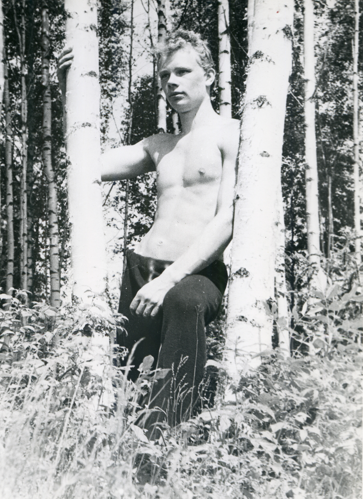
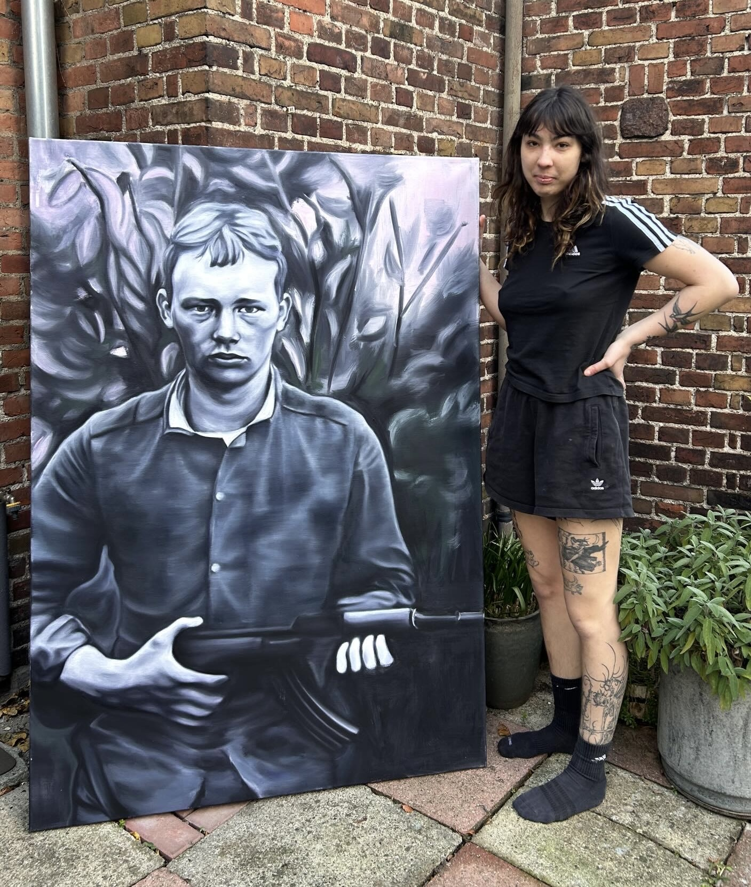
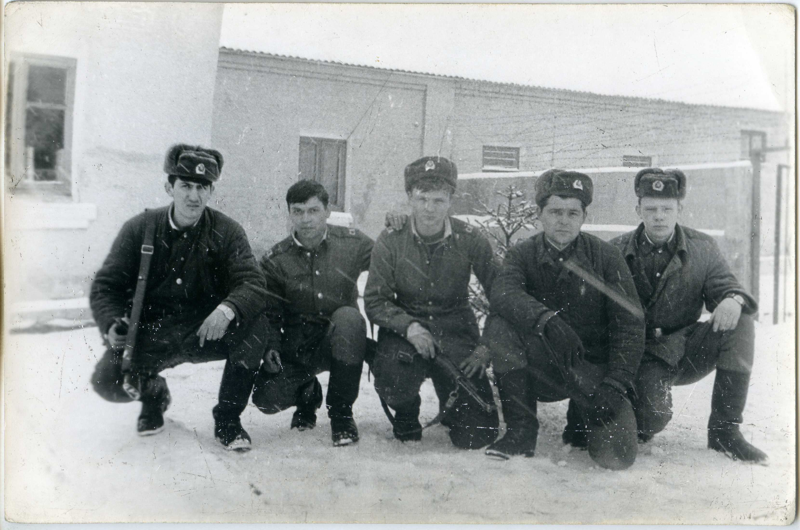
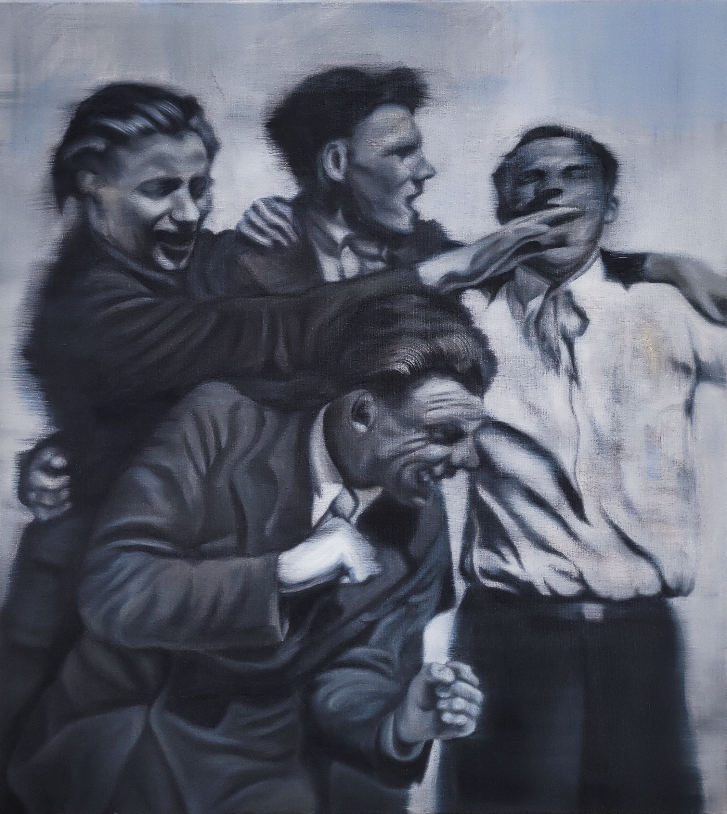
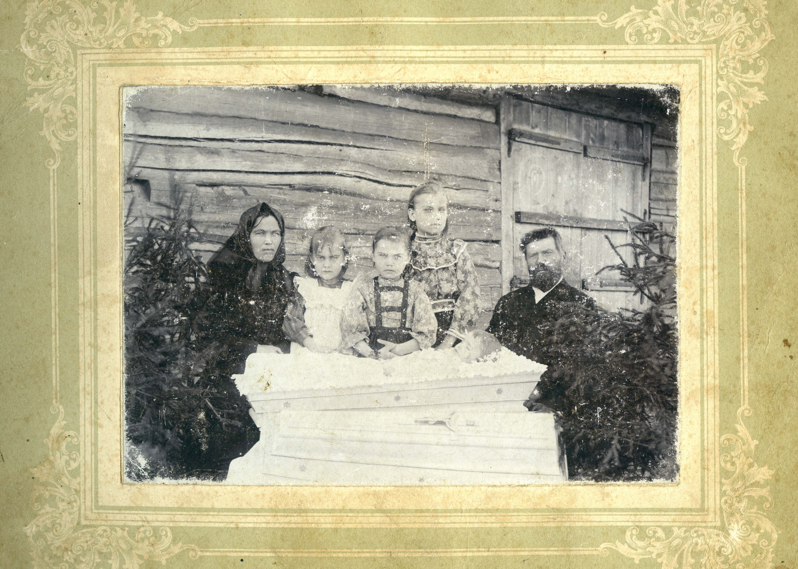
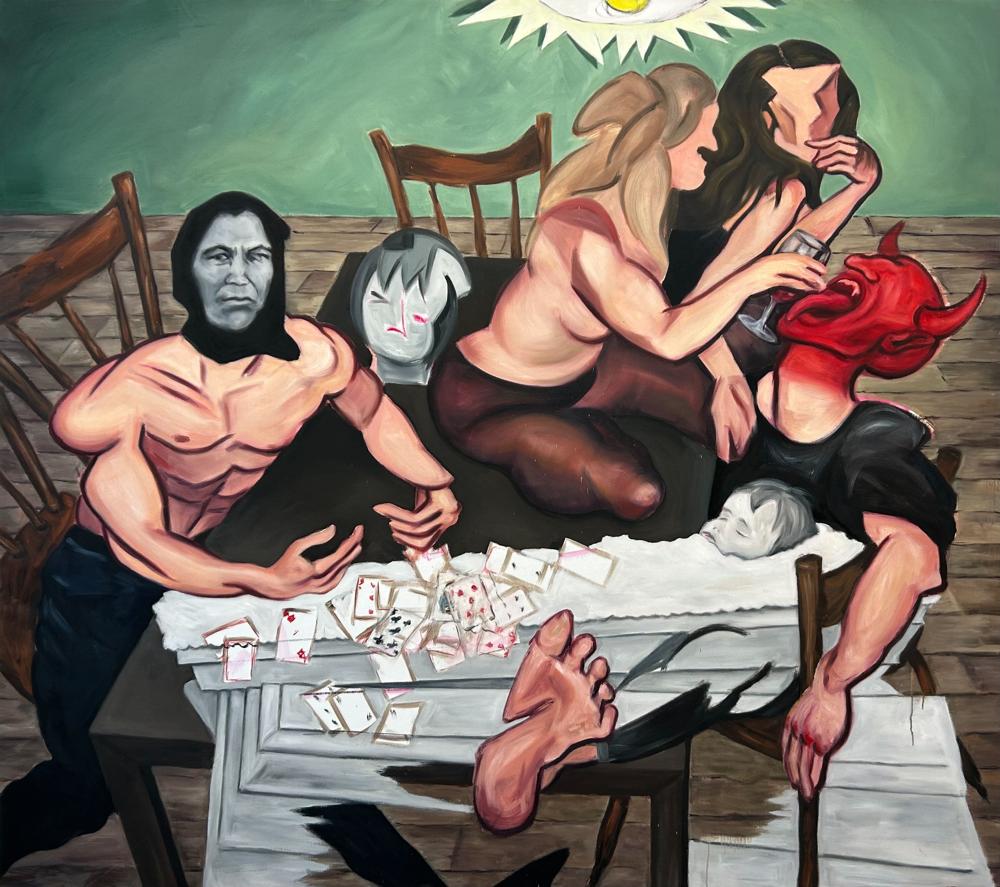
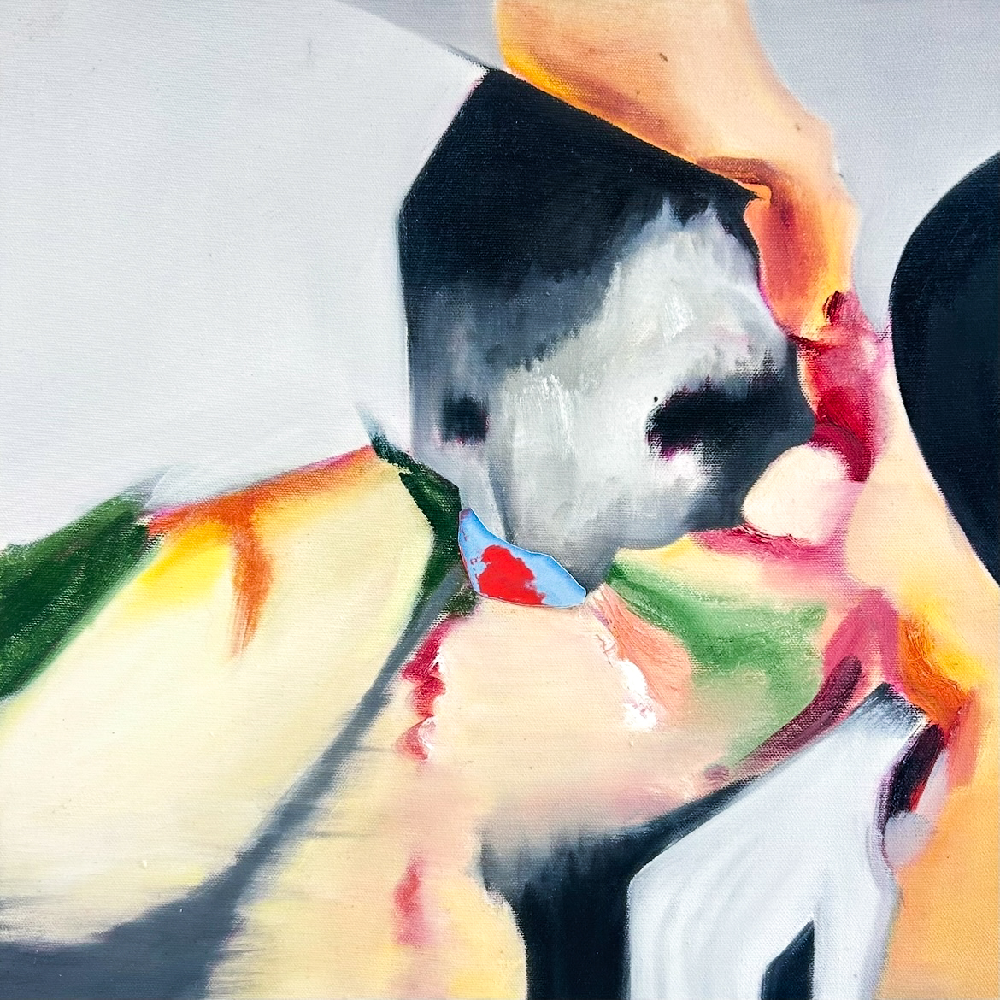
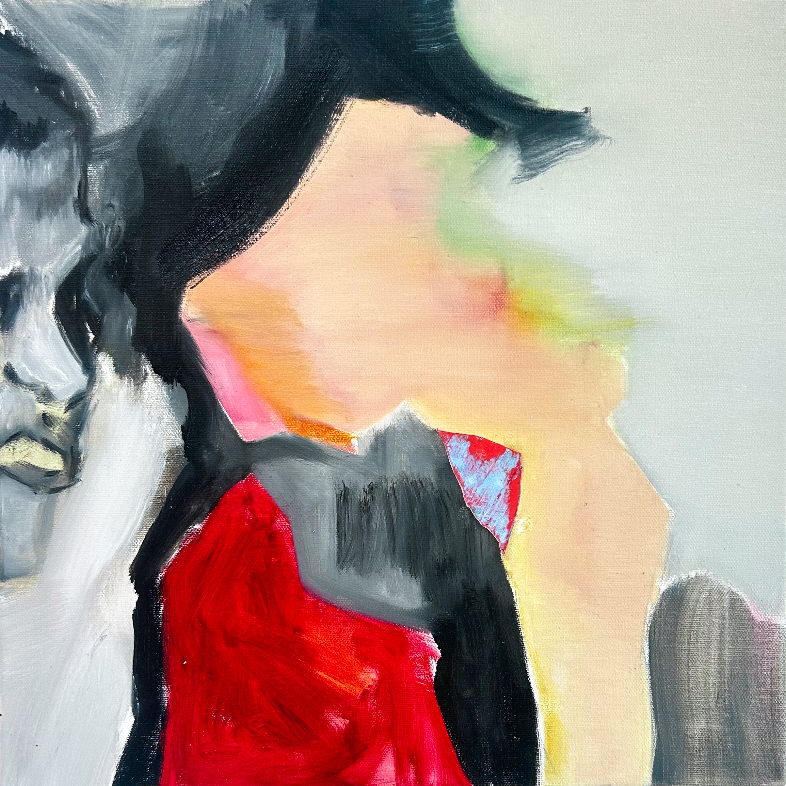

As a basis for this ongoing painting project serves my late grandpa's personal photograph collection that reveals the typical life of a Latvian under the almost 50 year long Soviet occupation (1940–1941, 1945–1991), including a comprehensive documentation of 7 years he spent deported to a settlement in Siberia. Initially I referenced the photographs quite directly; however, over time, I developed a method of working where I manipulate and intertwine this imagery with my own photographic material and submerge it to impulsive, painterly expression, highly varying the degree of recognition of the source. This method helps me highlight the relevance and devastating consequences of these events and the occupation in the present day and condemn Russia's attempts to repeat them.
Representing the initial phase of this project, directly referencing the source photograph, is a portrait of my dad's brother Aldis who was forcibly mobilised into the Soviet army in 1981, at 18 years young.
The Soviets took away his youth just like they did many others. Forced mobilisations, executions, deportations to forced labour camps, russification and complete eradication of local values and national identities were among the most widespread procedures the Soviets committed in the occupied countries.


'Aldis', 2023, 110×110cm, oil on canvas

Now, Russia carries on this tradition of Soviet imperialism and terror with vigorous passion. When Russia declared war on Ukraine in February of 2022, the eyes of the West were finally open. Yet for us, it was a 'we told you so' moment. This was preceded with decades of political pressure and physical attacks, like the annexation of Crimea in 2014.
While the protests and the attention of the western world have subsided, our fight continues. Fight fueled by generations who have suffered under the oppression of the Soviet Union and Russia.
My grandfather was deported to Tomsk Oblast in western Siberia as part of the mass deportations on 25th of March, 1949. During his time there from 1949 to 1956 he took hundreds of photographs of the people around him, one of which inspired this painting. What might seem a rather happy moment at the first glance, is a deception, for in reality, it was the state of being in a constant daze of vodka as a desperate measure to escape the misery and pain of being stripped of one's identity, living in horrendous conditions on a foreign land, 4500km away from home.

'Facade', 2022, 90×100cm, oil on canvas

Discussing generational trauma and the lingering consequences of war, the painting depicts a deeply symbolic interconnection of two scenes, more than 100 years apart referring back to the Russian imperialism of WWI. One scene depicts a mourning mother narrating the devastations of a family disheveled by war, which unjustly stripped them from their baby daughter. Ruthlessly colliding with the former is a decadent celebration by a group of young adults, detached from reality into a world of pleasures and ease. Though it's a slippery slope. The greater the hardships and deeper the pain, the more desperate and self-destructive the chase of the high becomes. Imminently the devil inside awakens.

'The decadent and the deceased', 2025/26, 200×230cm, oil on canvas
This diptych distorts the subjects to a minimal recognition providing a space for interpretation and spotlighting the painterly qualities.


'Don't judge a man by his hat', 2025, 40×40cm, oil and photographic print on canvas